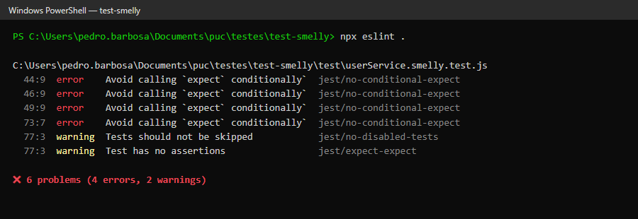

Análise estática com ESLint + eslint-plugin-jest e refatoração da suíte de testes do UserService
A suíte original (test/userService.smelly.test.js) passa integralmente (4 testes aprovados, 1 ignorado), mas a leitura manual revelou diversos maus cheiros. Os três mais graves são descritos abaixo.
Onde: teste "deve desativar usuários se eles não forem administradores", que percorre um array com for e decide, via if (!user.isAdmin), quais expect executar.
Por que é mau cheiro: um teste deve ter um único caminho de execução determinístico. Com laços e desvios, o leitor precisa “executar o teste de cabeça” para saber o que está sendo verificado, e cada asserção só roda em parte das iterações.
Risco: se o array mudar (ou ficar vazio), asserções deixam de ser executadas e o teste continua verde. Além disso, uma falha não indica qual cenário (comum ou admin) quebrou — o teste mistura duas regras de negócio distintas.
try/catch (Silent Exception / Conditional Expect)Onde: teste "deve falhar ao criar usuário menor de idade", cujo único expect está dentro do catch.
Por que é mau cheiro: o teste depende do fluxo de exceção para verificar algo; se a exceção não for lançada, nenhuma asserção roda e o Jest considera o teste aprovado.
Risco: é um falso positivo. Comprovei isso com um “mutante” manual: ao trocar if (idade < 18) por if (false) em src/userService.js, a suíte smelly continuou 100% verde, enquanto a suíte limpa falhou imediatamente. É exatamente o tipo de mutante sobrevivente observado no trabalho anterior de Teste de Mutação.
Onde: teste "deve criar e buscar um usuário corretamente", que contém dois Acts (createUser e getUserById) intercalados com asserções.
Por que é mau cheiro: verifica vários comportamentos de métodos diferentes num só teste, violando o padrão AAA (Arrange, Act, Assert) e o princípio de uma razão para falhar.
Risco: quando falha, não fica claro se o problema está na criação ou na busca; a primeira asserção que falha também esconde as seguintes, reduzindo o diagnóstico.
`ID: ${id}, Nome: Alice, Status: ativo\n`; qualquer mudança cosmética no formato quebra o teste sem haver bug.test.skip(...) com apenas um TODO, gerando falsa sensação de cobertura do cenário “sem usuários”.dadosUsuarioPadrao, declarados fora do teste, obrigam o leitor a procurar a origem dos valores.O teste escolhido foi o de desativação, que reúne lógica condicional, duas regras de negócio e asserções escondidas.
test('deve desativar usuários se eles não forem administradores', () => {
const usuarioComum = userService.createUser('Comum', 'comum@teste.com', 30);
const usuarioAdmin = userService.createUser('Admin', 'admin@teste.com', 40, true);
const todosOsUsuarios = [usuarioComum, usuarioAdmin];
for (const user of todosOsUsuarios) {
const resultado = userService.deactivateUser(user.id);
if (!user.isAdmin) {
expect(resultado).toBe(true);
const usuarioAtualizado = userService.getUserById(user.id);
expect(usuarioAtualizado.status).toBe('inativo');
} else {
expect(resultado).toBe(false);
}
}
});
describe('deactivateUser'))test('retorna true ao desativar um usuário comum', () => {
// Arrange
const usuarioComum = userService.createUser('Comum', 'comum@teste.com', 30);
// Act
const resultado = userService.deactivateUser(usuarioComum.id);
// Assert
expect(resultado).toBe(true);
});
test('altera o status de um usuário comum para "inativo"', () => {
// Arrange
const usuarioComum = userService.createUser('Comum', 'comum@teste.com', 30);
// Act
userService.deactivateUser(usuarioComum.id);
// Assert
expect(userService.getUserById(usuarioComum.id).status).toBe('inativo');
});
test('retorna false ao tentar desativar um administrador', () => { /* ... */ });
test('mantém o administrador com status "ativo" após tentativa de desativação', () => { /* ... */ });
test('retorna false quando o usuário não existe', () => { /* ... */ });
for/if: cada cenário virou um teste próprio, com caminho único. Todo expect sempre executa — elimina os erros jest/no-conditional-expect.As demais refatorações seguiram o mesmo raciocínio:
| Smell original | Correção na suíte limpa |
|---|---|
try/catch com expect no catch | expect(() => createUser(..., 17)).toThrow('O usuário deve ser maior de idade.') — falha se a exceção não ocorrer. |
| Eager Test (criar + buscar) | Dividido em describe('createUser') (dados, id, isAdmin padrão, erros) e describe('getUserById') (encontrado / null). |
| Relatório com string exata | Verifica comportamento: o relatório contém nome e status de cada usuário (toContain), não a formatação exata. |
test.skip vazio | Implementado: “informa que não há usuários quando o cadastro está vazio”. |
Dados globais (dadosUsuarioPadrao) | Dados declarados no Arrange de cada teste. |
Resultado: 5 testes frágeis viraram 15 testes pequenos e focados. npm test executa ambas as suítes com sucesso (19 aprovados, 1 ignorado — o skip do arquivo original, que não foi modificado).
Configurei eslint@8.57 + eslint-plugin-jest@28 com o .eslintrc.json do enunciado (versão 8 porque a 9 não lê mais esse formato de configuração por padrão). Primeira execução de npx eslint .:

A ferramenta detectou automaticamente, com linha e coluna exatas:
jest/no-conditional-expect — três no laço/if do teste de desativação (linhas 44, 46, 49) e um no catch do teste de menor de idade (linha 73). Confirma os smells 1.1 e 1.2.jest/no-disabled-tests (teste pulado) e jest/expect-expect (teste sem asserções).Comparando com a análise manual, o linter encontrou em segundos os problemas estruturais (lógica condicional, testes desabilitados ou sem asserção), mas não detectou o Eager Test, o Teste Frágil nem o Convidado Misterioso, que dependem de semântica e intenção. A ferramenta, portanto, complementa — e não substitui — a revisão humana.
Após a refatoração, npx eslint test/userService.clean.test.js retorna 0 erros e 0 avisos. Como verificação extra, o arquivo limpo também passa sem problemas em regras mais rígidas não exigidas pelo enunciado (jest/no-conditional-in-test, jest/require-to-throw-message, jest/no-standalone-expect, jest/max-expects com máximo 2).
O trabalho mostrou que uma suíte verde não garante proteção: os testes originais passavam mesmo com a validação de idade removida, um bug real que chegaria à produção. Testes limpos — um comportamento por teste, AAA, sem lógica condicional e com asserções sobre comportamento observável — falham pelo motivo certo, indicam diretamente a regra quebrada e resistem a mudanças cosméticas, o que reduz o custo de manutenção.
A análise estática torna esse cuidado sustentável: integrada ao fluxo (script npm run lint, CI ou pre-commit), impede que smells conhecidos voltem ao código sem depender da atenção do revisor. Aliada ao teste de mutação e à revisão humana, que capturam o que o linter não vê, ela forma uma estratégia de qualidade em camadas para o código de teste, que é tão parte do produto quanto o código de produção.